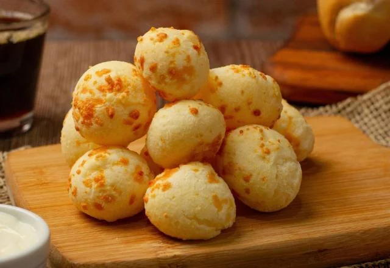

Sou aposentado, mas nunca deixei de trabalhar com amor e dedicação. Tudo começou de forma bem simples: fazendo quitutes em casa e vendendo para os vizinhos. Era uma forma de ocupar o tempo, ajudar na renda e, principalmente, espalhar um pouco de carinho em forma de comida.
As receitas? Vieram da minha mãe. Aprendi com ela, na cozinha de casa, onde tudo era feito com calma, cuidado e aquele tempero especial que só mãe sabe dar. Com o tempo, fui colocando meu toque, incrementando, testando novos sabores, mas sempre respeitando as raízes. É uma forma de manter viva essa herança tão especial.
Hoje, continuo nessa caminhada, levando um pedacinho da nossa história em cada receita. O que era só um extra virou paixão — e, para mim, isso não tem preço.